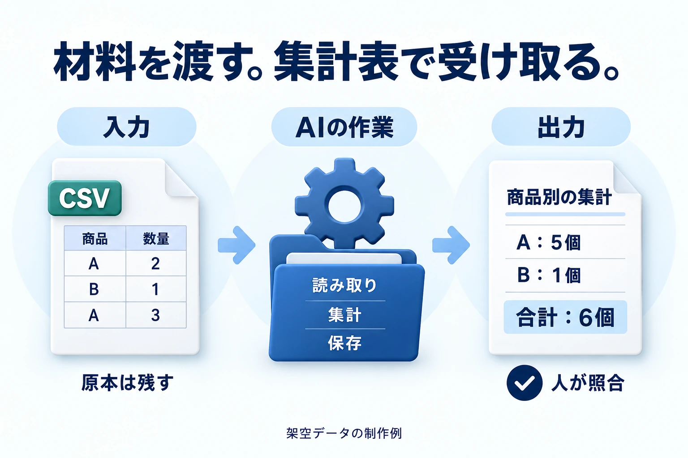

毎回の集計が大変
集計表・報告書を作る
作業代行の報酬
でも、設定が難しそう。
仕事として何を売るのか、まだ分からない。

対応する機能やツールをつなぐと、ファイルの作成・編集や、対応アプリの操作を進められます。
毎回手で足して文章にする作業を、ひとつの依頼へまとめられます。
商品名・数量が入った表
商品ごとに合計する
商品別の表と短い報告書
行数・合計・空欄を照合
何を入れたら何が出るかを決めると、翌月のデータにも使いやすくなります。
AIの機能名より、「何を受け取り、何を渡すか」で仕事を説明します。
何を受け取り、何を作って渡すかを決める。作業代行から始め、同じ処理を繰り返せる形へ整える。